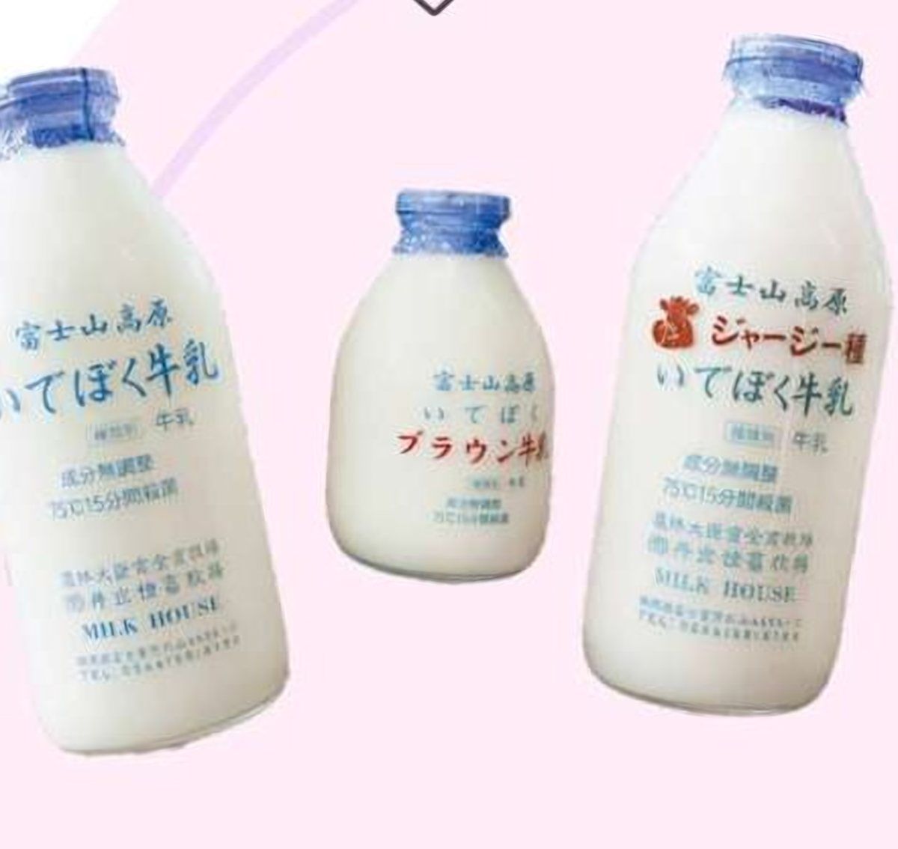
IDEBOK部
IDEBOK
「推し牛乳を見つけよう！」
あなただけの、推し牛乳を。
「推し牛乳を見つけよう！」をコンセプトにした、3種類の牛乳の飲み比べ体験。牛乳ごとの味わいの違いを楽しみながら、自分だけのお気に入りの一本を探す企画です。牛乳瓶型のポーチなど、かわいいグッズの販売も企画しました。
おいしく、たのしく、あざやかに。
静岡に「わ」の1ページを。Gofukucho Street, Shizuoka
October 2026 10.11sun12mon
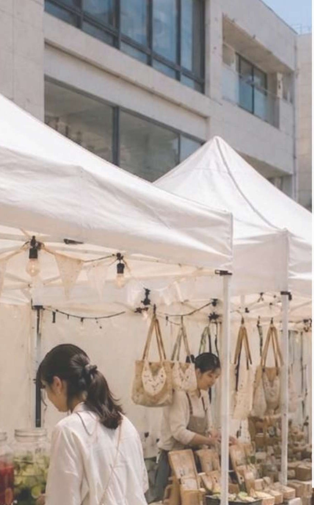
おいしく、たのしく、彩やかに。
学生が呉服町通りをプロデュース
Thank you
Iconic Shizuoka 2026 は、2026年10月11日（日）・12日（月・祝）の2日間、呉服町通りで開催いたしました。ご来場いただいた皆さま、ご出店・ご出演いただいた皆さま、運営にご協力いただいた皆さま、ご協賛・ご後援いただいた皆さまに、心より御礼申し上げます。
これからのお知らせは、公式 Instagram で発信します。
学生が静岡の未来を考える ─「挑戦の１ページを彩る。」
私たちが目指すのは、学生が静岡の魅力を五感で体験し、静岡の新しい一面を知り、育った静岡に誇りを持つ姿。
その先で県外に出ることになっても、静岡にUターンする姿、関係人口・交流人口として携わる姿。もちろん、そのまま静岡に住み続ける選択も理想的です。
そのために、静岡で活躍する出店者様・パフォーマー様の「挑戦の１ページ」を彩り、若者に届くコンテンツをつくります。
学生という等身大の立場で静岡に貢献しながら、同じ学生が静岡の魅力に「なるほど」と気づくきっかけを広げたい。その思いで集まったのが、実行委員会「I see's」です。
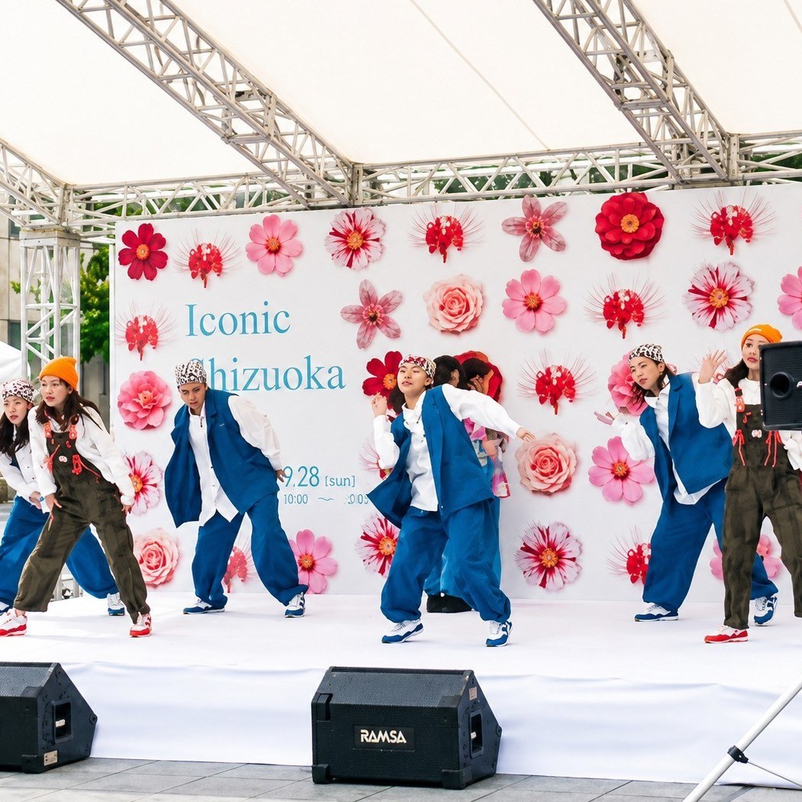
写真は昨年（2025）の様子
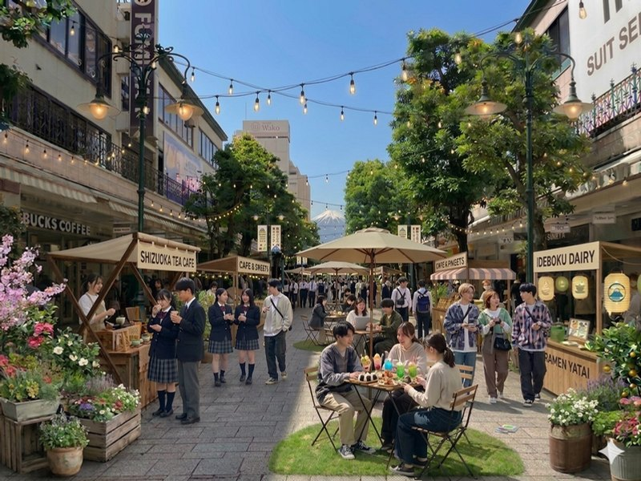
主にターゲット層の集客を促進するため、新しいコンテンツに「挑戦」し、コンセプトに添ったフォトスポットや会場装飾も行います。
「あ！こんなお店があったんだ。」
「あ！こんな人静岡にいたんだ。」
という自発的な驚きを体験。
イベント終了後に出店者様の実店舗を訪ねたり、数年後、数十年後に「久しぶりに会いに行こう。」「あのお店に行ってみよう。」と思ったりできる繋がりの創出。
県外移住も視野に入れている高校生・大学生に
静岡の魅力や人との繋がりが五感を通して「伝わる」
背景は会場イメージです
マルシェ、ステージ、フォトスポット。
静岡の「挑戦の１ページ」が、呉服町通りに集まります。

IDEBOK部
あなただけの、推し牛乳を。
「推し牛乳を見つけよう！」をコンセプトにした、3種類の牛乳の飲み比べ体験。牛乳ごとの味わいの違いを楽しみながら、自分だけのお気に入りの一本を探す企画です。牛乳瓶型のポーチなど、かわいいグッズの販売も企画しました。
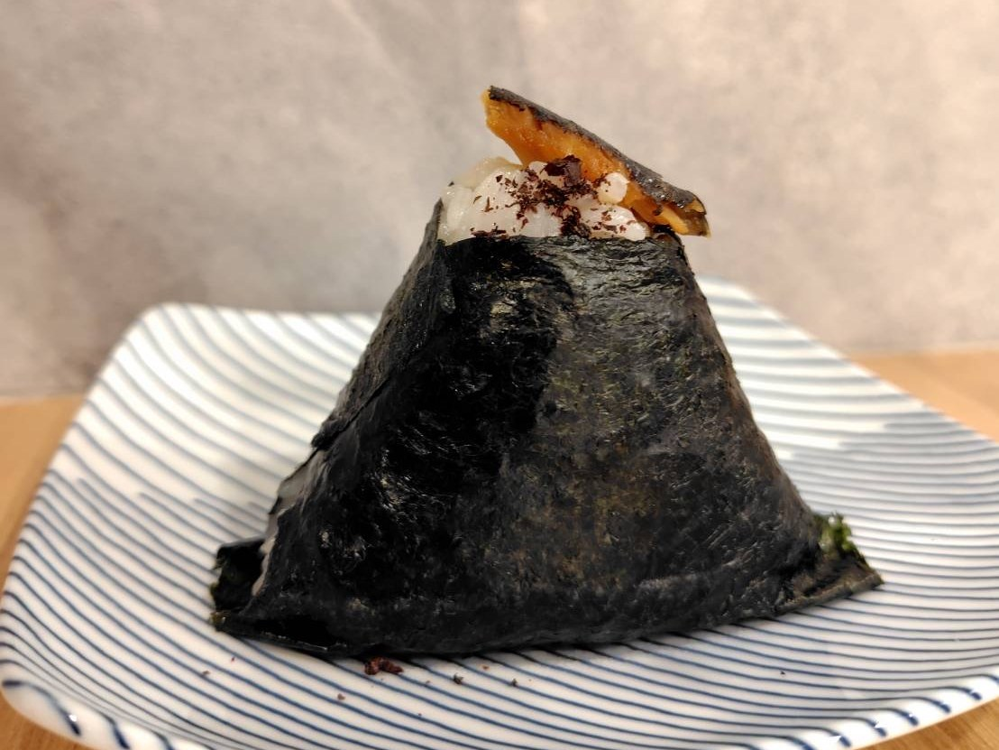
異業界コラボレーション
にぎる、つながる。静岡を一周できるおむすび
おむすび専門店「ふじ亭」と地域おこし協力隊が夢のコラボ！静岡県内4地域の特産品や隠れた名産品をぎゅっと詰め込んだ限定おむすびを販売。ひとくち食べれば、あなたと地域がつながる特別な体験を味わえます。
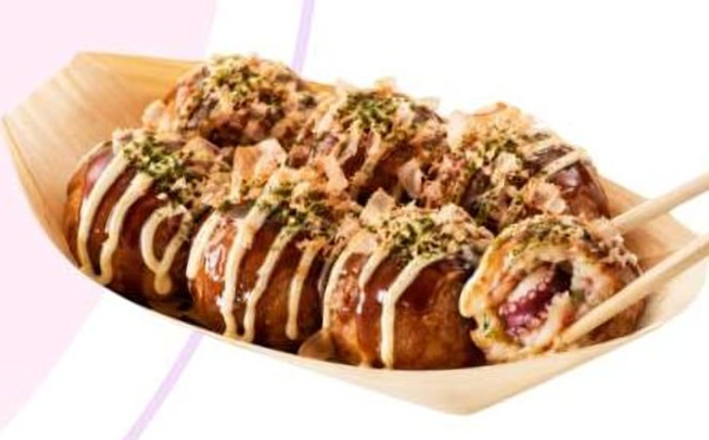
マルシェ
コンテナを活用し、地域の人が気軽に立ち寄れるたこ焼き屋さんを目指しています。学生や子どもにも親しみやすい味付けや空間づくりで、地域に愛されるお店づくりに取り組んでいます。
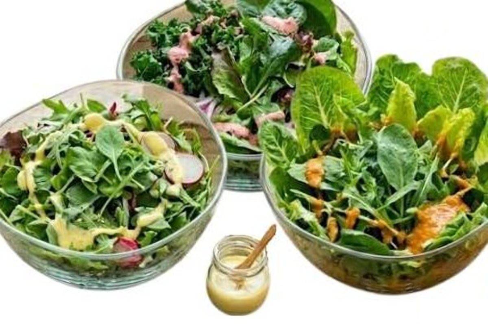
農家 × 発酵大学生
農園ナランハさんの新鮮こだわりリーフに、発酵ドレッシングを合わせて楽しむサラダボウル。心と体を整える食の楽しみ方を提案する、「発酵の可能性」を味わえる一皿です。
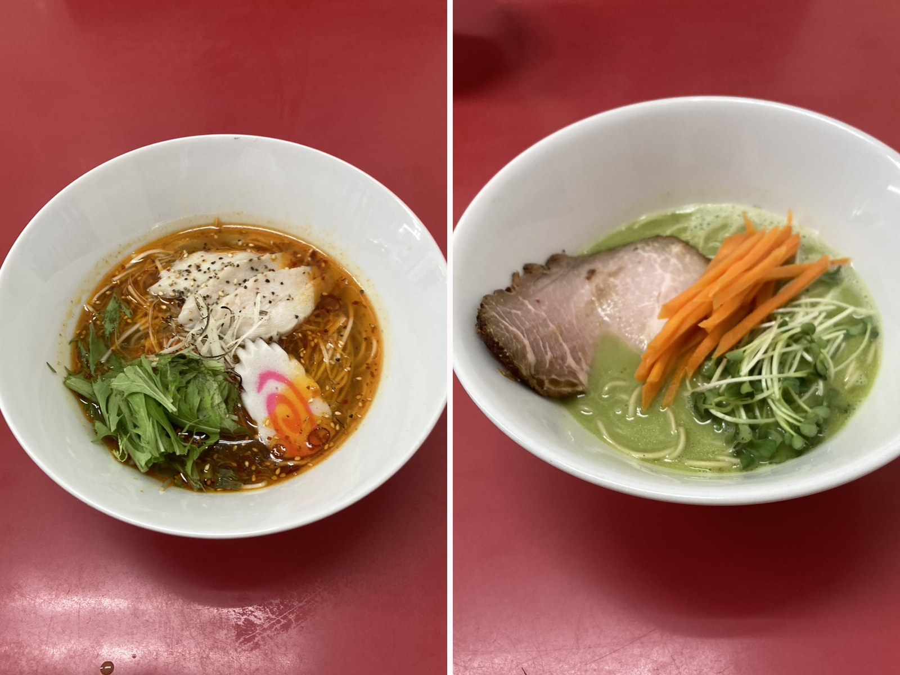
異業界コラボレーション
静岡市内の大学祭実行委員会の方々と市内のラーメン屋さんがコラボして開発した、新作ラーメン。大学生による若者のトレンドと、静岡市内で人気のラーメン屋さんをかけ合わせた異業種コラボです。
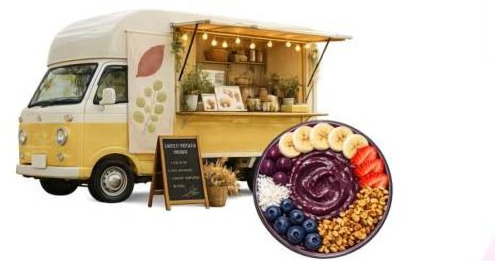
マルシェ
おまちの外にある魅力的な店舗が集まり、普段はなかなか出会えないお店や商品が並ぶマルシェ。初めて出店に挑戦する方の「挑戦」も全力でバックアップする企画です。
出店者一覧を見る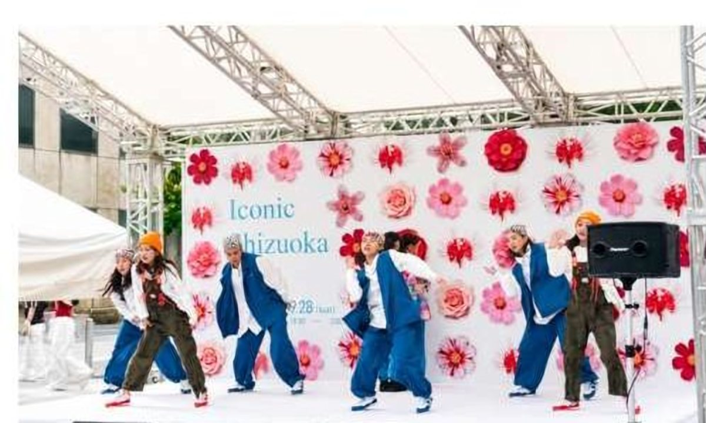
ステージ
誰かの「好き」が、交差点で重なる
マルシェでお腹を満たしたら、次は耳と心を満たすステージへ。街の交差点を舞台に、出演者それぞれの「好き」が詰まったパフォーマンスを届ける企画です。
出演者一覧を見るFood & Drinkフード・ドリンク 18店
Goods雑貨・ハンドメイド 4店
開催前に公表した出店者一覧です。
Day 110月11日（日）
Day 210月12日（月・祝）
開催前に公表したタイムテーブルです。
フラワード・ストリートデザインコンテンツ部
会場中央に大きな花束を飾ります。来場者は「いいね」と感じたブースへ、その花を届けることができます。この花は評価ではなく、あくまでも「気持ち」。呉服町通りをより色とりどりに彩ります。
「挑戦の１ページ」メインオブジェデザインコンテンツ部
事前に多くの静岡の人に「あなたの挑戦の１ページ」を伺い、当日は十人十色の「挑戦の１ページ」を模したオブジェを設置。鮮やかな花で装飾し、あなたの「挑戦の1ページ」を彩る企画です。
ラッキードローデザインコンテンツ部
出店者様のブースで1,000円以上のお買い上げで参加できるガチャガチャ。景品は静岡にゆかりのある豪華景品をラインナップ。どうしても回したくなるワクワクをあなたに。
県内インフルエンサー × お茶のカクテル異業界コラボレーション
県内のグルメ・お出かけ情報を発信するインフルエンサーが、お茶を使ったカクテル・ノンアルコールドリンクをお好みにカスタマイズ。当日限定の販売を企画しました。
音楽・ダンスパフォーマンスステージ担当部
県内のシンガーソングライター・ダンスパフォーマーの方々を中心に。ステージは設けず、同じ視線と近い距離で、より来場者の心に届くように設計しました。
2026
10.11sun10.12mon
11:30 – 17:00
ご来場ありがとうございました
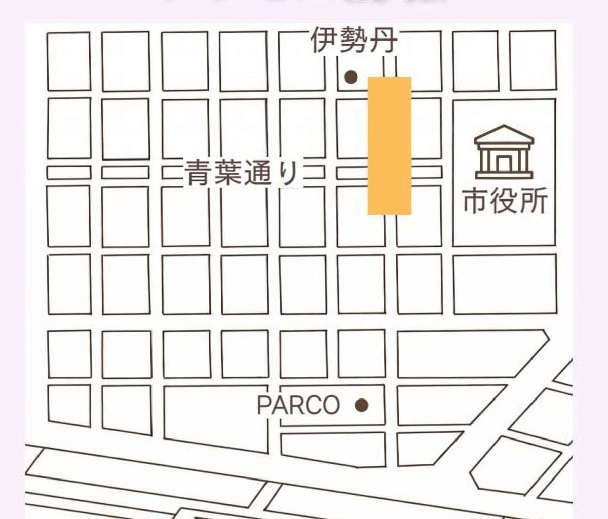
呉服町通りGofukucho Street, Aoi-ku, Shizuoka
JR静岡駅から徒歩約10分。伊勢丹、静岡市役所、PARCOに囲まれた、静岡のまちなかの目抜き通りが会場です。
Google マップで開く出店、出演、運営。
たくさんの「挑戦の１ページ」を、ありがとうございました。
Iconic Shizuoka2025
これは昨年（2025年）の様子です。2026年の開催情報は 開催概要 をご覧ください。
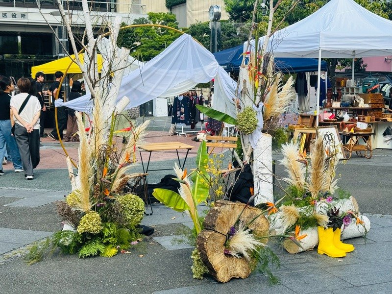
I see'sIconic Shizuoka 2026 実行委員会
Instagram @iconicshizuoka_students
高校1年生から大学4年生まで、県内外の大学・専門学校・高校から集まった学生による実行委員会です。「挑戦の１ページを彩る。」を合言葉に、企画から当日の運営までを学生自身の手で行います。
部署
ご協力学生団体